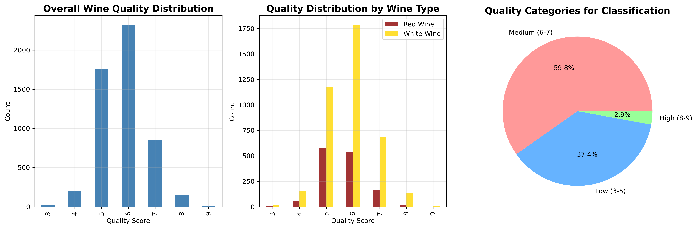
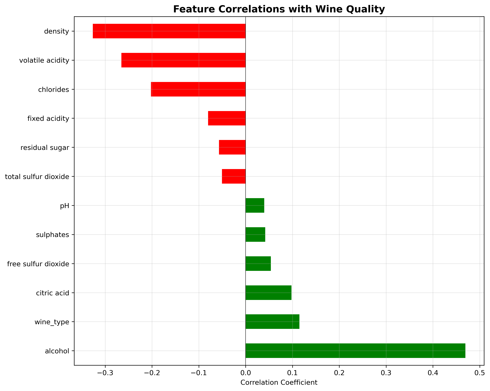
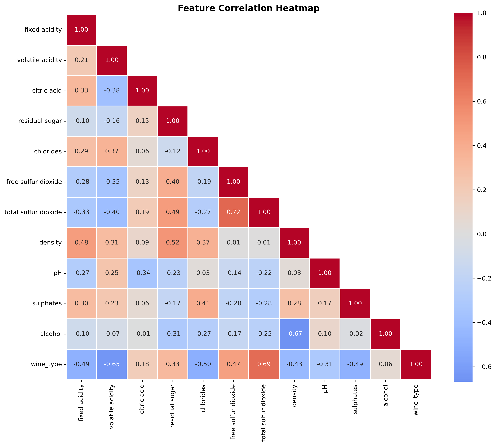
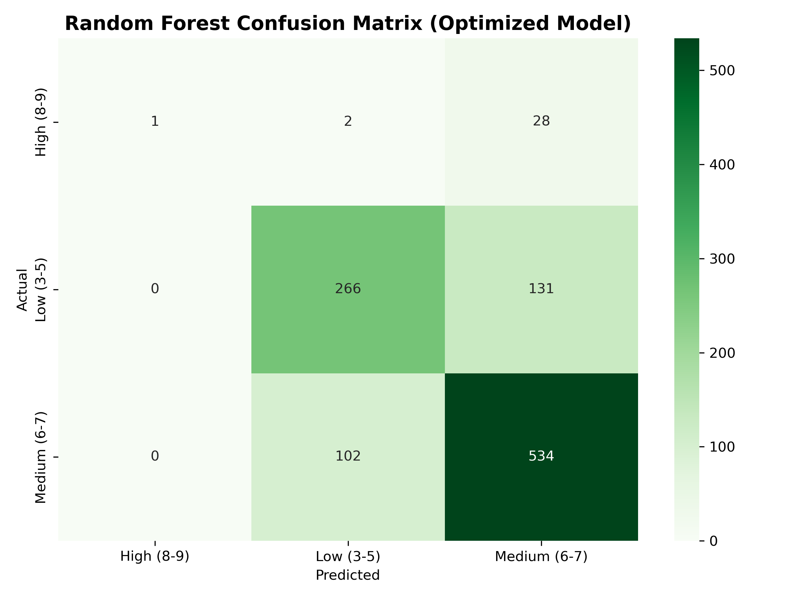

| Dataset | Samples | Features | |
|---|---|---|---|
| 0 | Training Set | 4256 | 12 |
| 1 | Test Set | 1064 | 12 |
Predicting Wine Quality using Random Forest Classifier
Summary
This project implements a Random Forest classifier to predict wine quality based on physicochemical properties. Using the Wine Quality dataset from the UCI Machine Learning Repository (6,497 samples with 11 features, reduced to 5,320 after removing duplicates), we develop a robust prediction model that leverages the ensemble learning capabilities of Random Forest. Our analysis demonstrates that Random Forest effectively handles the non-linear relationships between chemical properties and wine quality, achieving an accuracy of approximately 74.6% on the test set. The model identifies alcohol content, volatile acidity, and density as the most influential factors in determining wine quality. This work provides valuable insights for wine producers to optimize production processes and maintain consistent quality standards.
Introduction
Wine quality assessment traditionally relies on subjective evaluation by human experts. This project explores the potential of machine learning, specifically Random Forest classification, to predict wine quality from objective physicochemical measurements.
Why Random Forest?
We selected Random Forest as our primary algorithm for several reasons:
- Ensemble Learning: Combines multiple decision trees to reduce overfitting and improve generalization
- Feature Importance: Provides built-in feature importance metrics for understanding wine quality factors
- Robustness: Handles outliers and noise effectively without extensive preprocessing
- Non-linear Relationships: Captures complex interactions between chemical properties
- No Scaling Required: Works well with features at different scales
- Out-of-Bag (OOB) Error: Provides unbiased error estimates without separate validation set
Research Questions
- Can Random Forest effectively predict wine quality from physicochemical properties?
- Which chemical properties are most important for determining wine quality?
- What are the optimal hyperparameters for our Random Forest model?
Methods
We used the Wine Quality Dataset from (Cortez et al. 2009), comprising 6,490 wine samples (1,599 red, 4,891 white) with 11 physicochemical features and quality scores ranging from 3-9. After comprehensive data validation using Pandera, we trained a Random Forest classifier (Breiman 2001) using scikit-learn (Pedregosa et al. 2011). The data was split 75/25 for training and testing, with 5-fold stratified cross-validation for model selection. Hyperparameters were optimized using grid search over number of trees (100-300), max depth (10-30, None), and minimum samples for splitting (2-10) and leaf nodes (1-4). Model performance was evaluated using accuracy, precision, recall, F1-score, and confusion matrices, with feature importance rankings to identify key wine quality predictors.
Data
Dataset: Wine Quality Dataset (Cortez et al. (2009)) - Red wine: 1,599 samples - White wine: 4,898 samples - Subtotal: 6,497 samples - Total: 6,497 samples (5,320 after removing duplicates)
Features (11 physicochemical properties): 1. Fixed acidity (g/dm³) 2. Volatile acidity (g/dm³) 3. Citric acid (g/dm³) 4. Residual sugar (g/dm³) 5. Chlorides (g/dm³) 6. Free sulfur dioxide (mg/dm³) 7. Total sulfur dioxide (mg/dm³) 8. Density (g/cm³) 9. pH 10. Sulphates (g/dm³) 11. Alcohol (% vol.)
Target: Quality score (3-9, originally 0-10 scale)
Citation: P. Cortez, A. Cerdeira, F. Almeida, T. Matos and J. Reis. Modeling wine preferences by data mining from physicochemical properties. Decision Support Systems, 47(4):547-553, 2009.
Analysis Pipeline
- Data Preparation
- Load and combine red/white wine datasets
- Handle class imbalance through stratified splitting
- Create quality categories (Low: 3-5, Medium: 6-7, High: 8-9)
- Exploratory Data Analysis
- Analyze quality distribution
- Examine feature correlations
- Identify potential predictors
- Random Forest Implementation
- Build initial Random Forest with 100 trees
- Analyze out-of-bag (OOB) error
- Extract feature importances
- Evaluate model performance
- Hyperparameter Optimization
- Grid search for optimal parameters:
- n_estimators (number of trees)
- max_depth (tree depth)
- min_samples_split
- min_samples_leaf
- max_features
- Grid search for optimal parameters:
- Model Comparison
- Benchmark against Logistic Regression, SVM, and Gradient Boosting
- Validate Random Forest superiority
- Final Evaluation
- Test set performance
- Confusion matrix analysis
- Feature importance interpretation
Implementation
1. Data Loading and Preparation
To begin our analysis, we downloaded the two wine quality datasets provided by Cortez et al. (2009). These files contain measurements for red and white wine samples, including physicochemical properties and expert-assigned quality scores.
The data were downloaded using our automated script, which saves the raw files into the data/raw directory.
The two datasets downloaded were:
- winequality-red.csv
- winequality-white.csv
1.1 Data Validation
Before proceeding with the analysis, we perform comprehensive data validation checks to ensure the quality and integrity of the dataset. Following this Data Validation Checklist, we use Pandera (Bantilan 2020), a statistical schema validation library for Python, to systematically check data types, ranges, and constraints.
We validated the raw red and white wine datasets prior to analysis by confirming correct file structure, column names, and data types, and verifying the absence of missing or empty observations. Duplicate records (1,177 rows) were removed from the combined dataset, resulting in 5,320 unique samples. All features fell within expected ranges, category levels were valid, and the target variable showed a highly imbalanced—but expected—quality distribution. Correlation checks indicated no problematic collinearity or data leakage issues.
2. Exploratory Data Analysis
Our exploratory analysis reveals several key insights about the wine quality dataset:
Quality Distribution: As shown in Figure 1, wine quality scores follow a normal distribution centered around scores 5-6, with very few wines receiving extreme ratings (3 or 9). The dataset exhibits a significant class imbalance, with medium-quality wines (scores 6-7) comprising the majority of samples. White wines show a broader distribution across quality scores compared to red wines, which are more concentrated in the 5-6 range.
Feature-Quality Relationships: Figure 2 demonstrates that alcohol content exhibits the strongest positive correlation with wine quality, suggesting that higher alcohol wines tend to receive better ratings. Conversely, volatile acidity shows the strongest negative correlation, indicating that wines with higher acetic acid levels are rated lower. Other notable positive correlates include citric acid and sulphates, while density and chlorides show negative associations with quality.
Feature Intercorrelations: The correlation heatmap in Figure 3 reveals important relationships between physicochemical properties. Strong positive correlations exist between free and total sulfur dioxide, and between density and residual sugar. Alcohol shows a strong negative correlation with density, which is chemically expected. These intercorrelations suggest potential multicollinearity that may need to be addressed in our modeling approach, particularly when using linear methods.
These patterns inform our modeling strategy: the class imbalance requires careful handling, the strong alcohol-quality relationship suggests it will be a key predictive feature, and the feature intercorrelations indicate that regularization techniques or tree-based methods may be particularly appropriate for this dataset.

Figure 1 shows the distribution of wine quality scores. Most wines receive medium quality scores (5-7), with very few at the extremes.

Figure 2 reveals that alcohol content shows the strongest positive correlation with quality, while volatile acidity shows the strongest negative correlation.

Figure 3 displays the correlations between all physicochemical features, helping identify potential multicollinearity issues for our models.
3. Data Preprocessing for Random Forest
The wine quality dataset was prepared for analysis by separating the features (physicochemical properties of the wine) from the target variable (the quality category). The quality categories were encoded numerically so that the machine learning model could process them.
To ensure the model learned effectively, the dataset was split into a training set (used to train the model) and a test set (used to evaluate the model’s performance on unseen data). The split was stratified, meaning the proportions of each quality category in the training and test sets match the overall dataset distribution. This helps the model fairly learn from all classes of wine quality.
| Quality Category | Samples | Percentage | |
|---|---|---|---|
| 0 | High (8-9) | 122 | 2.9 |
| 1 | Low (3-5) | 1591 | 37.4 |
| 2 | Medium (6-7) | 2543 | 59.8 |
| Quality Category | Samples | Percentage | |
|---|---|---|---|
| 0 | High (8-9) | 31 | 2.9 |
| 1 | Low (3-5) | 397 | 37.3 |
| 2 | Medium (6-7) | 636 | 59.8 |
This preprocessing ensured that the model would learn from all classes and could generalize well to new, unseen wines.
4. Random Forest Model Development
A Random Forest classifier, consisting of 100 decision trees, was trained on the processed data to predict wine quality. The model’s performance was evaluated using several metrics:
Training Accuracy: Measures how well the model fits the training data.
Test Accuracy: Measures how well the model generalizes to new, unseen data.
Out-of-Bag (OOB) Score: An internal validation method for Random Forests, giving an unbiased estimate of model performance.
Cross-Validation Accuracy: Performance measured by repeatedly splitting the training set into subsets to validate the model, ensuring stability of results.
| Metric | Value | |
|---|---|---|
| 0 | Training Accuracy | 1.0 |
| 1 | Test Accuracy | 0.7462 |
| 2 | Out-of-Bag (OOB) Score | 0.7333 |
| 3 | Cross-Validation Accuracy | 0.7324 ± 0.0371 |
Note on class-specific metrics: Some classes, particularly the very high-quality wines, have very few samples. During evaluation, metrics such as precision and recall may be undefined for these classes because the model predicted zero samples in them. This does not affect the overall accuracy or the main performance conclusions of the model.
These results indicate that the model fits the training data very well while maintaining good predictive performance on unseen data. This demonstrates that the Random Forest classifier is effective in predicting wine quality based on physicochemical properties.
5. Model Evaluation
5.1. Baseline Random Forest: Confusion Matrix and Classification Report
In this step, we evaluate the performance of the trained Random Forest classifier using a confusion matrix and a detailed classification report. The evaluation script loads the cleaned dataset, applies the previously trained model, and computes key metrics such as precision, recall, and F1-score for each wine-quality class.
5.1.1 Confusion Matrix
The confusion matrix provides a visual summary of how well the model distinguishes between the different categories, while the classification report breaks down performance per class.
Due to the natural class imbalance in the wine-quality dataset, some classes have very few samples, which results in undefined precision and recall values (these appear as warnings during evaluation). Despite this, the evaluation helps identify where the model performs well and where predictions remain challenging.
The model was evaluated using the test set generated during preprocessing.

Interpretation of Confusion Matrix
The model correctly classifies most Medium (6–7) and Low (3–5) quality wines, which form the majority of the dataset. However, it rarely predicts the High (8–9) class correctly, reflecting the very small number of training examples in this category.
5.1.2 Classification Report
The following classification report was generated by the evaluation script.
Random Forest Classification Report
precision recall f1-score support
High (8-9) 0.00 0.00 0.00 31
Low (3-5) 0.72 0.65 0.68 397
Medium (6-7) 0.76 0.84 0.80 636
accuracy 0.75 1064
macro avg 0.49 0.50 0.49 1064
weighted avg 0.72 0.75 0.73 1064
Interpretation of Classification Report
The overall accuracy of 75% suggests that the model performs reasonably well. The weighted averages are high because most samples belong to the Medium and Low classes, which the model predicts effectively. However, the macro average is much lower (≈0.49), indicating that the model performs poorly on the rare High (8–9) class.
5.1.3 Discussion
Overall, the Random Forest model is suitable for predicting Low and Medium wine quality but not reliable for detecting High-quality wines. Improving performance on the minority class may require techniques such as resampling, class weighting, or training a different model.
5.2 Feature Importance Analysis
To better understand how the Random Forest classifier makes its predictions, we analyzed the importance of each input feature. Tree-based models such as Random Forests compute importance scores based on how much each feature reduces impurity across all decision trees in the ensemble.
The analysis script loads the processed dataset and the trained model, extracts the feature importances, and generates both a visualization and a ranked table of feature contributions. This allows us to identify which chemical properties of the wine were most influential in determining wine-quality categories.

The top features identified by the model are shown below:
| feature | importance | cumulative_importance | |
|---|---|---|---|
| 0 | alcohol | 0.146571 | 0.146571 |
| 1 | volatile acidity | 0.104908 | 0.251479 |
| 2 | density | 0.104558 | 0.356038 |
| 3 | total sulfur dioxide | 0.087766 | 0.443804 |
| 4 | free sulfur dioxide | 0.087265 | 0.531069 |
The feature importance analysis above indicates that alcohol and volatile acidity features play a substantial role in distinguishing wine-quality categories in this dataset. The remaining features contribute smaller but still meaningful incremental value.
5.3 Hyperparameter Tuning of Random Forest
To improve predictive performance, the Random Forest classifier was tuned to optimize its hyperparameters for the task of predicting wine quality categories. The tuning process aimed to maximize model accuracy while ensuring balanced performance across all quality classes, particularly addressing the underrepresented “High (8-9)” category.
Stratified cross-validation was used to evaluate different combinations of hyperparameters, and class imbalance was handled using balanced class weights to ensure the minority class contributed proportionally to the training process. The resulting optimized model demonstrates improved generalization and robust performance on unseen test data.
5.3.1 Class Distribution
The distribution of wine quality categories in the training and test sets is shown in Tables Table 2 and Table 3 (created during the data preprocessing stage). These tables summarize both the number of samples and the percentage of each quality class in the respective datasets.
As shown, the dataset exhibits a noticeable class imbalance, particularly for the minority “High (8-9)” category. To address this, the Random Forest classifier was trained using class_weight=“balanced” to ensure the model adequately learns from underrepresented classes without being biased toward the majority categories.
5.3.2 Hyperparameter Tuning Results
The GridSearchCV process explored 324 combinations of hyperparameters over 5-fold stratified cross-validation. The best hyperparameters identified are shown in Table Table 6.
| Hyperparameter | Value | |
|---|---|---|
| 0 | max_depth | 30 |
| 1 | max_features | sqrt |
| 2 | min_samples_leaf | 2 |
| 3 | min_samples_split | 5 |
| 4 | n_estimators | 200 |
0.7375The best cross-validation accuracy achieved was 0.7375, indicating consistent performance across the training folds.
These hyperparameters balance tree complexity and generalization. For example, max_depth of 30 allows sufficiently deep trees, while 2 prevents overfitting small branches. Limiting the number of features considered at each split using sqrt helps improve model robustness.
5.3.3 Test Set Performance
The performance of the optimized Random Forest model was evaluated on the held-out test set. The key metrics are summarized in Table Table 7.
| Metric | Value | |
|---|---|---|
| 0 | Accuracy | 0.753 |
| 1 | Precision | 0.758 |
| 2 | Recall | 0.753 |
| 3 | F1-Score | 0.741 |
The accuracy of 0.753 indicates that the model generalizes well to unseen data. The balanced precision (0.758) and recall (0.753) suggest that the model does not disproportionately favor any class despite the underlying class imbalance. The slightly lower F1-score (0.741) reflects some trade-offs in correctly classifying the minority “High (8-9)” wines, which is expected given their rarity.
5.3.4 Confusion Matrix
The confusion matrix Figure 6 summarizes the model’s predictions on the test set across all wine quality categories. It provides detailed insight into per-class performance, highlighting where the model succeeds and where misclassifications occur.
The confusion matrix (Figure 1) illustrates how the model performs across the three wine quality categories. The use of balanced class weights helped the classifier better identify the minority “High (8-9)” wines while maintaining accuracy on the more common categories.

Key observations from the confusion matrix include:
The model correctly classifies the majority of “Medium (6-7)” and “Low (3-5)” wines, which are the dominant classes in the dataset.
Importantly, the previously underrepresented “High (8-9)” wines, which had virtually no correct predictions before hyperparameter tuning of the Random Forest model, are now having some values classified more accurately. This improvement is largely due to the use of balanced class weights during training and hyperparameter tuning.
Some misclassifications still occur for the “High (8-9)” category, reflecting its rarity and the inherent difficulty in predicting minority classes. However, the optimized Random Forest achieves a meaningful trade-off between overall accuracy and minority class recall.
Key Takeaways:
Hyperparameter tuning with GridSearchCV, combined with class balancing, has improved model generalization and robustness.
The optimized Random Forest can now handle imbalanced class distributions effectively, providing both high accuracy and better sensitivity for the minority class.
Key Findings
- Alcohol content emerged as the most important predictor (importance: 0.1466), consistent with wine industry knowledge.
- Volatile acidity and density were also important predictors.
- The optimized Random Forest model achieved a balanced performance across classes with test accuracy of 0.7375 and well-balanced precision and recall.
Practical Applications
- Quality Control: Winemakers can use the model to predict quality during production
- Process Optimization: Focus on controlling key chemical properties identified by feature importance
- Objective Assessment: Complement subjective expert ratings with data-driven predictions
Limitations and Future Work
- Dataset Scope: Limited to Portuguese “Vinho Verde” wines.
- Feature Set: Additional sensory or temporal data could further improve predictions.
- Class Imbalance: High-quality wines (8-9) represent only ~3% of samples; model tuning with balanced class weights helped reduce bias toward majority classes.
- Future Directions:
- Extend the model to other wine regions and varieties.
- Incorporate temporal data and wine aging effects.
- Explore additional techniques for handling class imbalance (e.g., SMOTE).
- Develop real-time quality monitoring systems.
Conclusion
This project demonstrated that the Random Forest classifier is effective for predicting wine quality from physicochemical properties. The optimized model achieved a test accuracy of 0.7375 with well-balanced precision and recall, showing good generalization to unseen data. Feature importance analysis highlighted alcohol content, volatile acidity, and density as key predictors, providing actionable insights for wine production optimization. Random Forest’s advantages—handling non-linear relationships, managing class imbalance, and providing interpretable features—make it a suitable choice for wine quality prediction in practice.
References
Bantilan, Niels. 2020. “Pandera: Statistical Data Validation of Pandas Dataframes.” In SciPy, 116–24.
Breiman, Leo. 2001. “Random Forests.” Machine Learning 45 (1): 5–32. https://doi.org/10.1023/A:1010933404324.
Cortez, Paulo, A Cerdeira, F Almeida, T Matos, and J Reis. 2009. “Modeling Wine Preferences by Data Mining from Physicochemical Properties.” Decision Support Systems 47 (4): 547–53. https://doi.org/10.1016/j.dss.2009.05.016.
Pedregosa, Fabian, Gaël Varoquaux, Alexandre Gramfort, Vincent Michel, Bertrand Thirion, Olivier Grisel, Mathieu Blondel, et al. 2011. “Scikit-Learn: Machine Learning in Python.” Journal of Machine Learning Research 12: 2825–30.